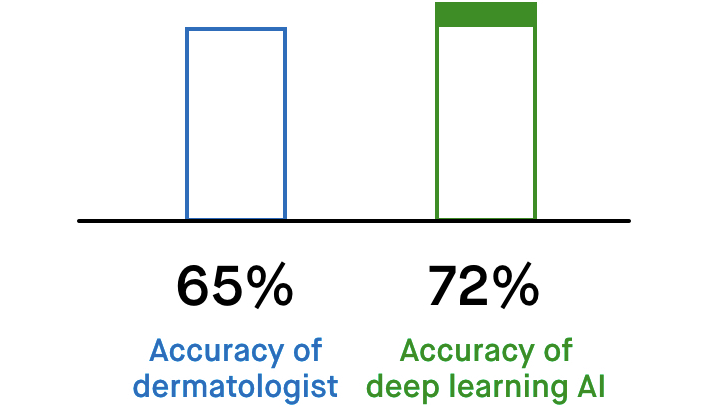
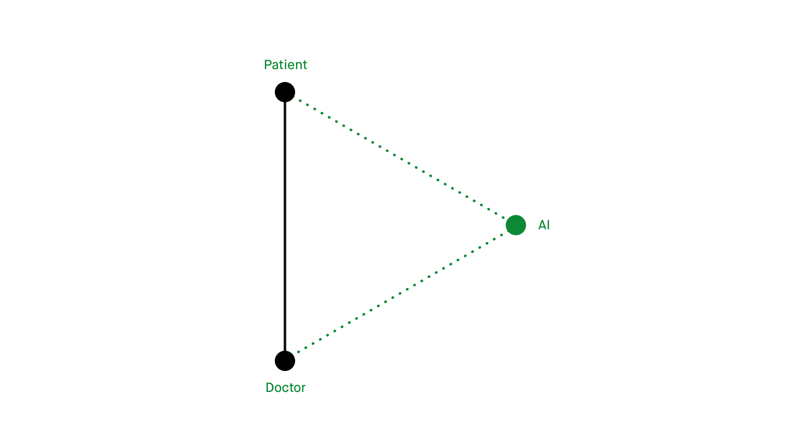
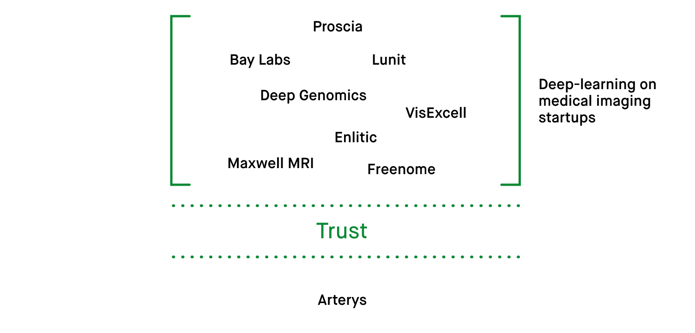
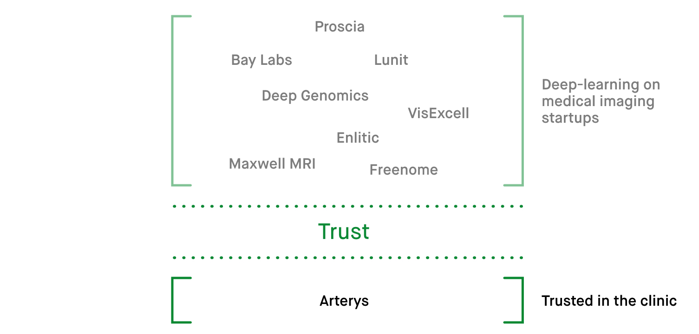
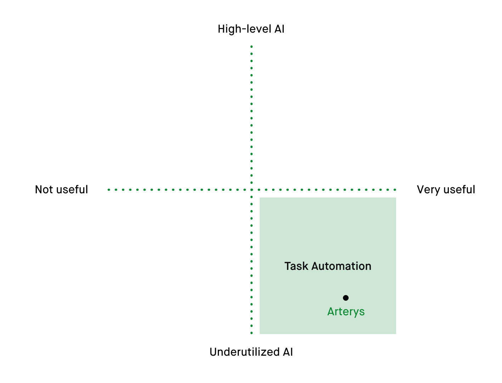
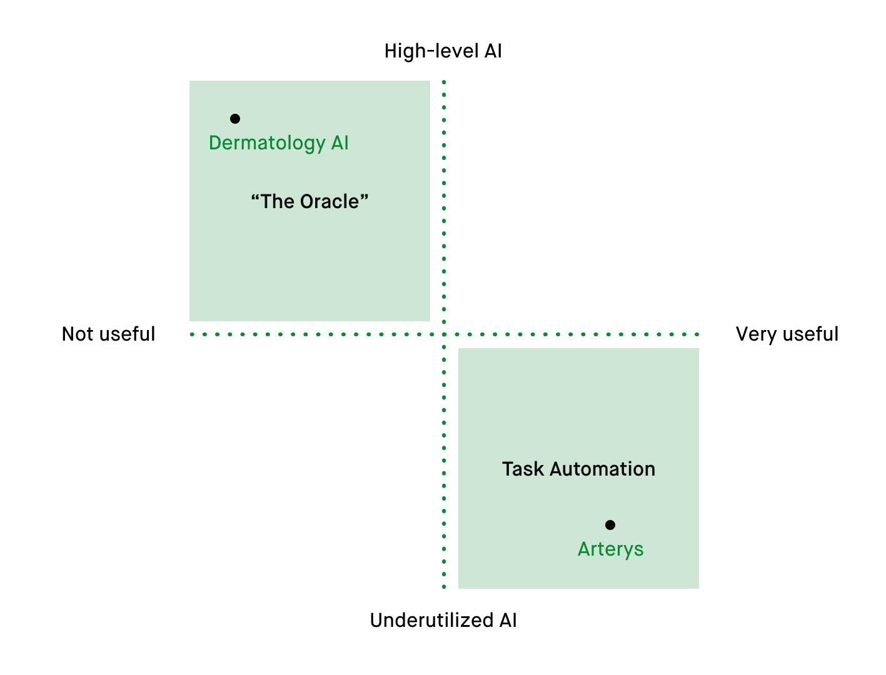
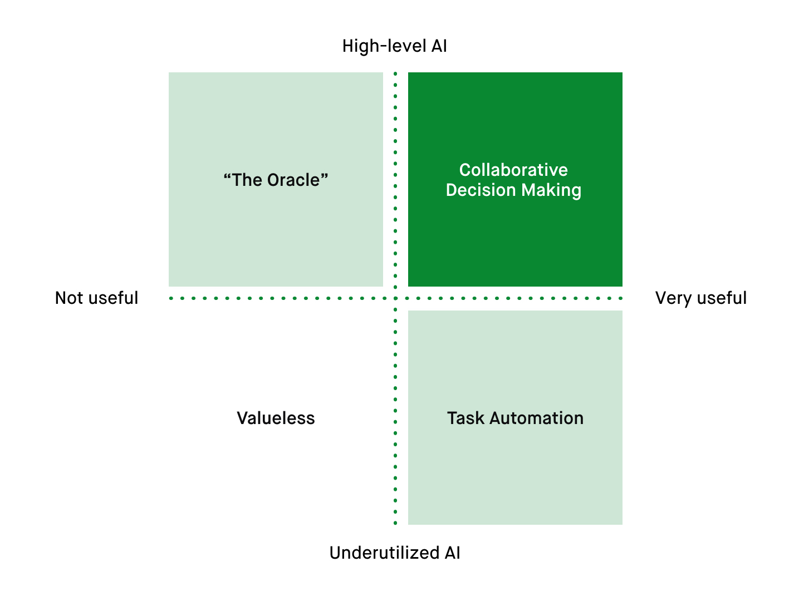
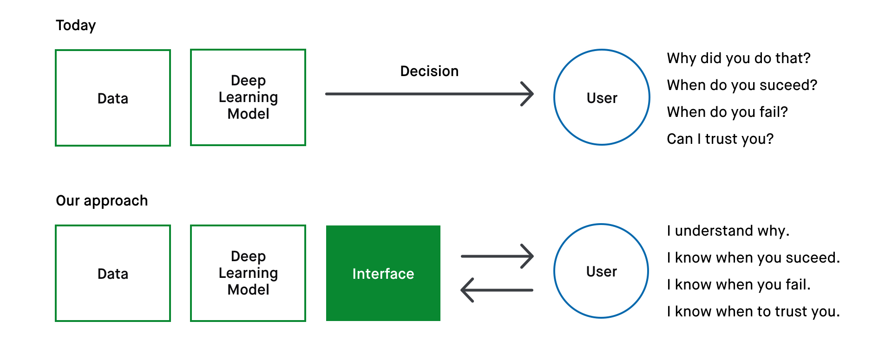

What, why, and how?
Hi! We are Louis and Parker, two seniors in USC's Iovine and Young Academy. We are exploring how interface design can improve the intepretability of deep neural networks. That way doctors can interact with and trust in an AI's responses and use them to better treat patients.
Overview
Please check out some of our motivations, findings, and thoughts below. We aim for our work to be accessible to everyone, so we hope you keep reading regardless of your familiarity with AI.
- Terminology
- What are the important words in AI and what do they mean?
- Motivation
- Deep learning (DL) is something new for healthcare.
- Our Work
- Collaborative decision making is the key to leveraging AI within healthcare.
(Thanks to Laura Deming for wholly inspiring the look and feel of this page.)
What do we mean when we say AI, machine learning, and deep learning?

tldr; — Though AI, Machine Learning, and Deep Learning are related terms, we should distinguish between them when considering how to apply AI to healthcare. Essentially, an AI is a computer program that makes decisions. Machine learning is how that program learns to make accurate decisions. And deep learning is an exciting subset of machine learning that enables an AI to make accurate decisions when faced with large, abstract problems.
You’ve probably heard these words thrown around a bunch — AI, machine learning, and deep learning. And sometimes it might seam like they can be used interchangeably.
But that's not really the case.
Though these concepts are all related, they actually imply pretty different things.
AI — makes predictions
tldr; — An AI is a computer program that generates a prediction based on an input. With that definition in mind, AI isn't a new concept for healthcare professionals.
An AI is just any computer program that makes a prediction given some input. In this way, 'AI' can act as an all-encompassing term for systems that make decisions.
Input → AI → Prediction .. Therefore, we can call an AI a predictive modelNo worries if you're not familiar with this idea of models. A way to think about them is that they take in a bit of data and then are able to associate that data with something else (either a single value, or multiple values). So the graph of y=2x+1 is a kind of model, as if you give it an x value, it will relate it to a corresponding y-value. The Sokal score explained below is also a model, as you give it some details about a patient, and it can link those to a risk-level value..
This is convenient because predicative models are common in healthcare. A more than 40-year-old example of one is the Sokal score.
This is a program that takes in specific details about a leukemia patient, like their age, spleen size, and platelet count. It is then able to assign them a risk-level to indicate how aggressive their disease is.

Again, Input → AI → Prediction .. The computer program that generates the Sokal score is an example of an AI. But what does it do with the input values to turn them into a single, meaningful number? And how does it do this accurately?
How a computer learns how to do this is where machine learning comes in!
Machine Learning — develops the formula
tldr; Machine learning is how an AI develops the ability to take in some clear-cut input values, manipulate them, and then put them together to create a prediction.
So if we take a peek inside how the Sokal score works, we see it's just a formula. It takes in the input variables and simply multiplies them each by a certain number.

Then when those results are all put together, we get a single value—the sokal score—that corresponds to that patient's risk level.

The magic of what makes this work is getting the right numbers that the inputs are multiplied by — and the process The computer accomplishes this by looking at past examples of patients and homing in on the values that combine to offer the most meaningful/accurate risk estimate. to get those right numbers is machine learning.

Deep Learning — develops its own strategies
tldr; Deep learning is how an AI develops the ability to take in a large, abstract input (like a picture), break it apart in ways that the AI determines are important, and then manipulate it to arrive at a prediction.
Deep learning is how an AI develops the ability to take in a large, abstract input (like a picture), break it apart in ways that the AI determines are important, and then manipulate it to arrive at a prediction.
Now what if you needed an AI to make a decision that depended on a whole bunch of factors? A lot more than the number of inputs that Joseph Sokal determined were important for sorting leukemia patients into risk groups.
More specifically, what if you wanted an AI to tackle a problem that depended on so many factors that you couldn't even identify them all yourself? The kind of decision that requires an expert, like a doctor.

Problems that deep learning is suited for are actually a lot more complicated than picking out 9 un-identified factors, as is pictured above. To get a feel for the complexity of the problems we're talking about here, consider self-driving cars. Would you be able to tell an autopilot program all of the inputs it should focus on while driving — from interpreting roadsigns to avoiding different types of vehicles? Thinking through this reminds me of this Spongebob episode.
This is where deep learning comes in—as it enables an AI to learn the important factors it needs to consider to make an accurate decision all on its own. Because these factors are wholly determined by the AI (which it works out by looking at examples), we don't know what it is considering to come to a final decision.
Therefore, we have to represent the factors in the deep learning model below with question marks..

Isn't that pretty remarkable? That, through deep learning, an AI can develop its own strategy for making a decision (instead of optimizing a strategy it's given, like in finding what to multiply a patient's age and spleen size by in the Sokal score formula.)
This means that we can use deep-learning-powered AI to tackle problems These problems, like driving a car or identifying a tumor, weren't necessarily too complex for computers. Instead, we just did not have an efficient way to communicate them in a way that computers could understand and master. that were previously outside the scope of what we could ask computers to do.
Deep learning is something new for healthcare.
The power of deep learning
tldr; The ability for deep learning systems to take on complex problems is getting people excited about how AI can impact healthcare—specifically over how it could limit diagnostic error and allow for earlier detection.
A recent study demonstrated a deep learning program that can diagnose skin cancer.
Provided a photo of a skin lesion, this program can instantly classify it as cancerous or not.
This is powerful—one day, this technology could allow people to diagnose their own skin cancer using just their computer or mobile phone.
But even more immediately, an accurate skin-cancer detector like this one could actually assist physicians (especially those not trained in dermatology) in making the right call when they see a patient with a particular skin lesion.
What's remarkable is that nowhere did researchers "tell" this program how to do its job—to look for some specific discoloration, mark, or texture.
It figured out a strategy for classifying skin lesions all on its own—a strategy that dermatologists today may not even be aware of.
What's more is that these strategies performed amazingly well, often classifying skin lesions more accurately than board-certified dermatologists asked to perform the same task.
With accuracy like this, many researchers are confident that deep learning systems could help doctors arrive at a correct diagnosis more often and sooner. This idea that an AI can arrive at a correct diagnosis sooner is two-fold. First off, it seems likely a deep learning model could be utilized earlier in the diagnostic process—like by having MRIs read by a deep learning model before a radiologist is able to. Though, it's a little more interesting to wonder if a deep learning system could spot the signs of a disease earlier than doctors are currently able to. This is reinforced by the idea that deep learning systems may be considering factors doctors are not. Simply, maybe through deep learning an AI can find meaning in a mark, texture, or test result that a doctor isn't able to.
The problem with deep learning
As good as all of this sounds, the program's chance of getting the diagnosis incorrect is still not zero—it's around 30%. This would be an acceptable error-rate for a dermatologist, but its less acceptable for an AI.
That's because we don't really know how it's getting the right answer when it does — we cannot break down its strategies for classification. This also means we don't know why it's sometimes wrong.
The challenge here is that this means we don't know when it's going to be wrong.
Imagine you were diagnosed with skin cancer by a dermatologist. A likely response might be asking the dermatologist, "Why?" The dermatologist could explain what factored into his or her diagnosis, but the deep learning program cannot. It can only provide you with its final decision.
And how are you supposed to trust in a mysterious program's final decision if you have no idea what it knows and how it came to its conclusion?
This fact that deep learning systems make decisions based on their own terms makes it nearly impossible for doctors and patients to trust in them today — and AI will not be widely adopted in healthcare if this trust doesn't exist.
And please don't just take our word for it.
Dr. Jorge Nieva, a medical oncologist at the USC Norris Comprehensive Cancer Center, explained to us why he can't trust systems trained through deep learning:
"If the model is telling me something that is a matter of critical importance, even 90% accuracy is not good enough. I can’t deconvolute it. I can’t learn from it."
A new opportunity for deep learning
This absence of trust between doctors and deep learning has created a split between what AI reachers are most excited about in healthcare and what solutions are actually getting applied.
There's certainly no shortage of startups using deep learning on medical imaging. Yet very few have gained the trust of healthcare professionals and regulators.
This means few companies have been able to apply their tech in the clinic.
One such company is Arterys.
To simplify things, Arterys is getting applied because they've gone after using AI and deep learning to automate inefficient tasks the doctor doesn't want to do. And solutions like this work because they recognize they need to be readily usable by doctors.
It is easier to establish trust when automating tasks, as doctors remain in control and can 'check' the work of the AI (i.e. making sure its correctly segmenting and measuring a tumor).
The drawback of solutions like this is they don't do a lot to leverage the potential of AI to improve diagnostics and detection beyond today's standards.
On the other end of the spectrum from Arterys you see work being done that makes AI into an Oracle.
Examples of Oracle AI include IBM Watson and the dermatology AI from earlier. These position AI systems as these hyper-accurate decision makers. And though they can achieve impressive results, systems that aren't directly useful to the doctor have no room in healthcare today.
So how can we fully utilize the power of AI to advance healthcare, but also respect that the only way to be applied is to be useful and usable to doctors?
Building interfaces that allow for collaborative decision making
We believe the answer lives within this space of collaborative decision making.
This is where a doctor is able to explore the decision making process of deep learning-powered AI as a way to compliment their own problem solving.
Using the dermatology AI as an example, what this could like applied is a general physician who doesn't often diagnose skin conditions can snap a picture of a lesion, share it with AI, and then see both how the AI would classify the lesion, and why it has come to that decision.
Therefore, the physician can use the AI's answer to augment his/her own thinking with confidence.

The right interface can turn a powerful AI into a useful decision-making tool. It enables users to probe the inner-workings of an AI which allows them to build trust in the decisions it makes.
This allows for AIs to work together with humans, instead of simply trying to replace them (which is unlikely to happen anytime soon within medicine).
Our Approach
We are continuing to explore what kinds of features can make this interface most useful.
- Histograms, heat maps, and other graphical representations the model IN ORDER TO provide clarity.
- Simplifying deep learning models into individual units — we're calling these "decision units."
- Empahsizing errors and outliers in training data
We by no means think this design of this interface is simple, but it is accessible. We imagine it in-line with professional tools such as Final Cut, Premier, Logic, Ableton—interfaces that require at least basic training and practice before they become truly useful.
There's no one button that will make an AI understandable, but there is a straightforward process the user can follow in order to translate models into useful explanations.